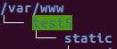
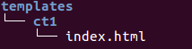

使用Ajax
- 使用视图通过上下文向模板中传递数据，需要先加载完成模板的静态页面，再执行模型代码，生成最张的html，返回给浏览器，这个过程将页面与数据集成到了一起，扩展性差
- 改进方案：通过ajax的方式获取数据，通过dom操作将数据呈现到界面上
- 推荐使用框架的ajax相关方法，不要使用XMLHttpRequest对象，因为操作麻烦且不容易查错
- jquery框架中提供了$.ajax、$.get、$.post方法，用于进行异步交互
- 由于csrf的约束，推荐使用$.get
- 示例：实现省市区的选择
- 最终实现效果如图：

引入js文件
- js文件属于静态文件，创建目录结构如图：

修改settings.py关于静态文件的设置
STATIC_URL = '/static/'
STATICFILES_DIRS = [
os.path.join(BASE_DIR, 'static'),
]
在models.py中定义模型
class AreaInfo(models.Model):
aid = models.IntegerField(primary_key=True)
atitle = models.CharField(max_length=20)
aPArea = models.ForeignKey('AreaInfo', null=True)
生成迁移
python manage.py makemigrations
python manage.py migrate
通过workbench向表中填充示例数据
- 参见“省市区.sql”
- 注意将表的名称完成替换
在views.py中编写视图
- index用于展示页面
- getArea1用于返回省级数据
- getArea2用于根据省、市编号返回市、区信息，格式都为字典对象
from django.shortcuts import render
from django.http import JsonResponse
from models import AreaInfo
def index(request):
return render(request, 'ct1/index.html')
def getArea1(request):
list = AreaInfo.objects.filter(aPArea__isnull=True)
list2 = []
for a in list:
list2.append([a.aid, a.atitle])
return JsonResponse({'data': list2})
def getArea2(request, pid):
list = AreaInfo.objects.filter(aPArea_id=pid)
list2 = []
for a in list:
list2.append({'id': a.aid, 'title': a.atitle})
return JsonResponse({'data': list2})
在urls.py中配置urlconf
from django.conf.urls import url
from . import views
urlpatterns = [
url(r'^$', views.index),
url(r'^area1/$', views.getArea1),
url(r'^([0-9]+)/$', views.getArea2),
]
主urls.py中包含此应用的url
from django.conf.urls import include, url
from django.contrib import admin
urlpatterns = [
url(r'^', include('ct1.urls', namespace='ct1')),
url(r'^admin/', include(admin.site.urls)),
]
定义模板index.html
- 在项目中的目录结构如图：

- 修改settings.py的TEMPLATES项，设置DIRS值
'DIRS': [os.path.join(BASE_DIR, 'templates')],
- 定义模板文件：包含三个select标签，分别存放省市区的信息
<!DOCTYPE html>
<html>
<head>
<title>省市区列表</title>
</head>
<body>
<select id="pro">
<option value="">请选择省</option>
</select>
<select id="city">
<option value="">请选择市</option>
</select>
<select id="dis">
<option value="">请选择区县</option>
</select>
</body>
</html>
在模板中引入jquery文件
<script type="text/javascript" src="static/ct1/js/jquery-1.12.4.min.js"></script>
编写js代码
- 绑定change事件
- 发出异步请求
- 使用dom添加元素
<script type="text/javascript">
$(function(){
$.get('area1/',function(dic) {
pro=$('#pro')
$.each(dic.data,function(index,item){
pro.append('<option value='+item[0]+'>'+item[1]+'</option>');
})
});
$('#pro').change(function(){
$.post($(this).val()+'/',function(dic){
city=$('#city');
city.empty().append('<option value="">请选择市</option>');
$.each(dic.data,function(index,item){
city.append('<option value='+item.id+'>'+item.title+'</option>');
})
});
});
$('#city').change(function(){
$.post($(this).val()+'/',function(dic){
dis=$('#dis');
dis.empty().append('<option value="">请选择区县</option>');
$.each(dic.data,function(index,item){
dis.append('<option value='+item.id+'>'+item.title+'</option>');
})
})
});
});
</script>